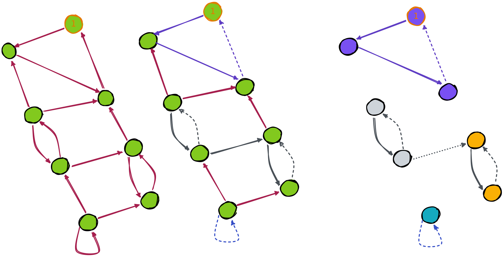
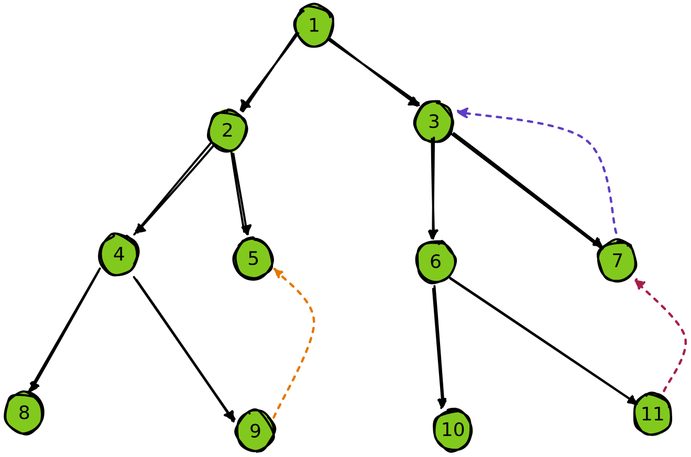
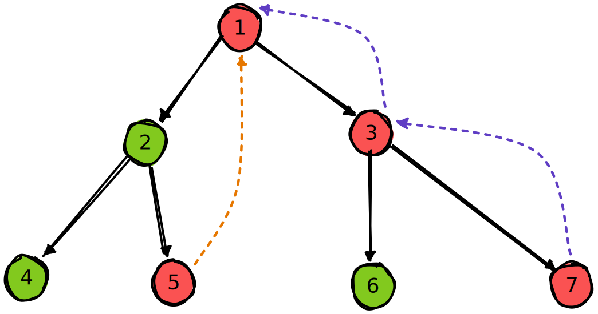
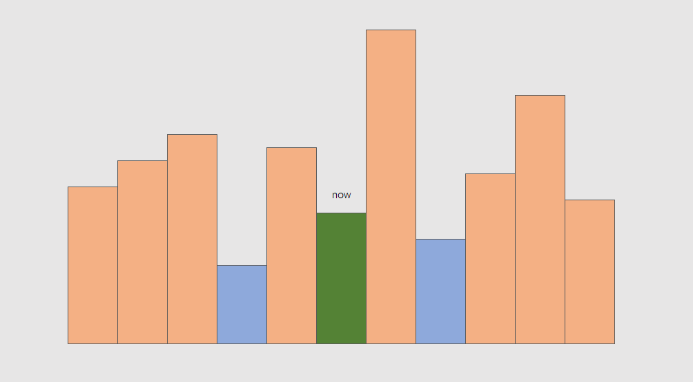
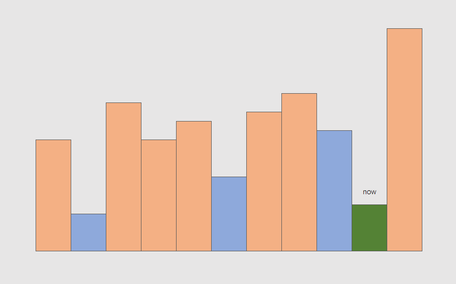

stealed foreword
The first laboratory session was devoted to finding out that developer feels slippery and that fixer smells awful.
试试 mdbook
github pages 好像静态网页都能托管。
呼呼呼
学习，学个屁。真如漏勺兜水，前面学后面忘。
行逆水行舟之事挫人心志，左看右看不知深处，浑浑厄厄不知岁月，转头一看什么也没有留下。
哗啦哗啦
-
mdbook默认的公式是mathjax。这个blog感觉尽量不要把数学的东西丢进来，但等下还是看看preprocess，把mathjax换成katex，以及 -
markdown看看有没有CICD支持的lint。 -
racket语法高亮。
TLS
One cannot build a beautiful and functional bridge without a knowledge of steel and dirt and considerable mathematical technique for using this knowledge to compute the properties of structures.
开始研习 the little schemer，记录学习过程中的想法
据 preface 所言，此书旨在 teaching reader thinking recursively，为了达成这一目的，作者才选择了 scheme 作为教具。
此书的写作目的并非让读者熟练掌握 scheme 本身，作者明确指出书中只用到了 scheme 的一个小子集。
在 guideline 中，作者建议 Read carefully，并且 Do not read the book in fewer than three sittings。前面章节的理解会影响后面的阅读，请读者保证顺序理解所述内容。
若在读书过程中设立一个明确的目标，大概就是理解并自行推导出 y-combinator，理解其思想。
Racket
racket 是 lisp 的一种方言，是 scheme 的一个 descendant。
没了解过 scheme，不太清楚具体区别。不过据说 racket 能直接用来看 TLS，使用 DrRacket，并选择 racket 原生语言即可：
#lang racket
cons and list
atom
序言中定义了 atom?:
(define atom?
(lambda (x)
(and (not (pair? x)) (not (null? x)))))
即，不是 pair，也不是 null 的东西就叫 atom
> (atom? null)
#f
> (atom? '(1 2 3))
#f
> (atom? #f)
#t
> (atom? 1)
#t
> (atom? "abc")
#t
怀疑这是不是书中自造的概念，我在 The Racket Guide 里没看到这个说法
pair, list 和 s-expression
reference 中提到：
In general, the result of cons is a pair. The more traditional name for the cons? function is pair?, and we’ll use the traditional name from now on.
也就是说 cons 是 pair 的构造子，(cons a b) 表示把 a 和 b 连在一起，构成一个 pair。
这一点与书中不一样。
TLS中并没有pair这一回事，而是只有list，并将cons视为list的构造子，其第二个参数必须也是一个list。我这里还是采用
racket实际的情况。对此，书中提到一笔：
In practice,
(cons a b)works for all valuesaandb, and
(car (cons a b)) = a,(cdr (cons a b)} = b
利用 cons，我们构造出 list 和 s-expression，按我理解，二者是递归定义的，以 CFG 写出来大概像这样:
S-expression =
atom |
list
list =
null |
(cons S-expression list)
list
- 要么是
null - 要么是一个特殊的
pair。特殊在于该pair的第二个部分一定是一个list。由此可知，list必有类似以下的结构：
(cons a (cons b (cons c (cons d null))))
一个例子是
> (cons null null)
'(())
racket 中，null 也可以写作 '()。单引号是一个函数 quote 的简写
值得注意，(cons a b) 直接将 a, b 组成一个 pair，这不等于 (list a b)：
> (cons 1 2)
'(1 . 2)
> (cons 1 '(2))
'(1 2)
> (list 1 2)
'(1 2)
> (list? (cons 1 2))
#f
> (pair? (cons 1 2))
#t
> (pair? (list 1 2))
# t
'(a b) 表示一个 list，而 '(a . b) 表示一个 pair。应该将前者看作后者的一种简写，'(a b) 写全了应该是 '(a . (b . ()))
quote
还需理解
datum。quote是否与其数据引用有关。
'a = (quote a)
'(a b c) = (list 'a 'b 'c)
在 REPL 里测试一下：
> '#t
#t
> '1
1
> '"abc"
"abc"
> '()
'()
> (list)
'()
> 'fdasfs
'fdasfs
一个层层展开的例子：
''(1)
-> (quote '(1))
-> (quote (quote (list 1)))
> (car ''(1))
'quote
> (cdr ''(1))
'((1))
分析一下，首先，要理解 (car ''(1)) 得到 'quote ，只需要理解 (quote (quote (list 1))) 是一个 list，它的左侧就是 quote
然后为了得到 (cdr ''(1))，这里把 list 看成 pair，即：
(quote (quote (list 1)))看作(quote . ((quote (list 1))))
再例如：
> (car '(define a 1))
'define
> (car '(+ 1 2))
'+
这里有个关于 null 的，有点特别的例子：
> null
'()
> '()
'()
> 'null
'null
> ''()
''()
> ''null
''null
null
书中指出，(quote ()) 是 null 的一种记号。
Lisp: Also
()and'().Scheme: Also
'()
实验一下:
> (quote ())
'()
> (null? (quote ()))
#t
嗯... () 能单独出现在 (quote ()) 里，这是否说明解释器以某种规则进行了特判。
> null
'()
> '()
'()
> (eq? null '())
#t
> (eq? 'null ''())
#f
有点神秘
stars
直到 *-functions 这一章，作者用上了他定义的所有东西。其迭代的对象有
(cons atom list)(cons number list)(cons s-expression list)
从这时起，每次 l 上的迭代都将判断三块地方
(null? l)，其为边界条件(atom? (car l))，若#t，则在(car l)上递归else，在(cdr l)上递归
例如 occur*
(define (occur* a l)
(cond
((null? l) 0)
((atom? (car l))
(cond
((eq? a (car l)) (add1 (occur* a (cdr l))))
(else (occur* a (cdr l)))))
(else (+ (occur* a (car l)) (occur* a (cdr l))))))
关于 leftmost
(define (leftmost l)
(cond
((null? l) null)
((atom? (car l)) (car l))
(else
(cond
((null? (leftmost (car l)))
(leftmost (cdr l)))
(else (leftmost (car l)))))))
实际上不需要去问 (cdr l)，因为此处左侧要么存在一个 atom，要么为 null，因而只需要考虑 (car l)
(define (leftmost1 l)
(cond
((null? l) null)
((atom? (car l)) (car l))
(else (leftmost1 (car l)))))
书上给的答案是
(define (leftmost2 l)
(cond
((atom? (car l)) (car l))
(else (leftmost2 (car l)))))
其假设 l 的左侧非 null
不清楚实际写代码，如果出了 null 怎么办。是 lisp 不容易出现这种问题吗？
eqlist?
首先，写了一个判断两个 list 是否相等的判定函数 eqlist?
(define (eqlist? l r)
(cond
((and (null? l) (null? r)) #t)
((or (null? l) (null? r)) #f)
(else
(cond
((and (atom? (car l)) (atom? (car r)))
(and (eq? (car l) (car r))
(eqlist? (cdr l) (cdr r))))
((or (atom? (car l)) (atom? (car r))) #f)
(else (and (eqlist? (car l) (car r))
(eqlist? (cdr l) (cdr r))))))))
然后，利用这个函数来写一个判定 s-expression 是否相等的函数 equal?
(define (equal l r)
(cond
((and (atom? l) (atom? r)) (eq? l r))
((or (atom? l) (atom? r)) #f)
(else (eqlist? l r))))
最后，用 equal? 倒回来替换掉 eqlist? 中 s-expression 的比较：
; modified `eqlist?`
(define (eqlist? l r)
(cond
((and (null? l) (null? r)) #t)
((or (null? l) (null? r)) #f)
(else (and (equal? (car l) (car r))
(eqlist? (cdr l) (cdr r))))))
; use this `equal?`
(define (equal? l r)
(cond
((and (atom? l) (atom? r)) (eq? l r))
((or (atom? l) (atom? r)) #f)
(else (eqlist? l r))))
这形成了一个相互递归调用，它的收敛性我不好说
只能勉强看出来，每次调用的过程中，参数都在变，而且应该是作为 list 变短了。这很符合书中所述的某一条 Commandment
shadow
这章没太看懂跟 shadow 有什么关系。
前面写了两个不同形式的算术表达式 parser，后面用另一种方式定义了自然数。
估计是想跟柏拉图的地穴寓言一样表达一下认知论的东西。
friends and relations
set
实现了一些集合操作，没什么好说的
pair
书中的 pair 定义为长为 2 的 list，与实际上不同。
fun
从函数映射的角度看这种...类似 map 的结构
定义 fun? 来判定映射, fullfun? 来判定双射。这不该是满射吗
应该说 map 天然就是满射，所以他这里只判断了单射，于是满射。
这章最后用两种办法判定双射，一种是直接看陪域有没有重复，也就是是不是单射。
问有没有另一种实现，给出的答案是判定其逆映射是不是映射。
嗯...
abstract and continuation
这章还没深入讲 lambda，只是将其作为抽象工具
continuation
Wiki:
In computer science, a continuation is an abstract representation of the control state of a computer program. A continuation implements (reifies) the program control state, i.e. the continuation is a data structure that represents the computational process at a given point in the process's execution; the created data structure can be accessed by the programming language, instead of being hidden in the runtime environment. Continuations are useful for encoding other control mechanisms in programming languages such as exceptions, generators, coroutines, and so on.
简单理解的话，感觉是把一个连续过程分解成从节点到节点，并且把节点以具体数据结构表示出来方便后续操作。有点像 linux 的文件系统，有点像流
multirember&co
我不好说，这部分有点烧脑
(define multirember&co
(lambda (a lat col)
(cond
((null? lat)
(col '() '()))
((eq? a (car lat))
(multirember&co a (cdr lat)
(lambda (newlat seen)
(col newlat (cons (car lat) seen)))))
(else
(multirember&co a (cdr lat)
(lambda (newlat seen)
(col (cons (car lat) newlat) seen)))))))
还是直接来个例子展开：
(define a-friend
(lambda (x y) (null? y)))
(multirember&co 2 '(1 2 3) a-friend)
=> (multirember&co 2 '(2 3)
(lambda (newlat seen)
(a-friend (cons 1 newlat) seen)))
=> (multirember&co 2 '(3)
(lambda (newlat' seen')
(lambda (newlat seen)
(a-friend (cons 1 newlat) seen))
newlat'
(cons 2 seen')))
=> (multirember&co 2 '()
(lambda (newlat'' seen'')
(lambda (newlat' seen')
(lambda (newlat seen)
(a-friend (cons 1 newlat) seen))
newlat'
(cons 2 seen'))
(cons 3 newlat'')
seen''))
=> ((lambda (newlat'' seen'')
(lambda (newlat' seen')
(lambda (newlat seen)
(a-friend (cons 1 newlat) seen))
newlat'
(cons 2 seen'))
(cons 3 newlat'')
seen'')
'()
'())
=> ((lambda (newlat' seen')
(lambda (newlat seen)
(a-friend (cons 1 newlat) seen))
newlat'
(cons 2 seen'))
(cons 3 '())
'()))
=> ((lambda (newlat seen)
(a-friend (cons 1 newlat) seen))
(cons 3 '())
(cons 2 '()))
=> (a-friend (cons 1 (cons 3 '()) (cons 2 '())))
=> #f
我不好说。
从这个展开来看，该函数会将 l 分成两个 list，前者是去掉 a 的 l，后者是所有的 a。
恕我直言，这个例子举得不是很好。一来这个函数的意义并不显然，二来难度曲线太大，手动模拟起来有些繁琐
已经解包
我觉得一个简单点的例子也许看的更清楚
写个函数 remove-a&co x l col 处理数字的 list，去掉 l 中的 x 并统计其个数
(define (remove-a&co x l col)
(cond
((null? l) (col '() 0))
((= x (car l))
(remove-a&co x (cdr l)
(lambda (newl cnt)
(col newl (add1 cnt)))))
(else (remove-a&co x (cdr l)
(lambda (newl cnt)
(col (cons (car l) newl) cnt))))))
; (remove-a&co 1 '(2 1 3 5 4 1)
; (lambda (l cnt) (list l cnt)))
; 直接用 `list` 替代这个 `lambda`
(remove-a&co 1 '(2 1 3 5 4 1) list)
; output:
; '((2 3 5 4) 2)
用一个简单点的例子写一下展开过程：
(remove-a&co 1 '(2 1 3) list)
->
(remove-a&co 1 '(1 3)
(lambda (newl cnt)
(list (cons 2 newl) cnt)))
->
(remove-a&co 1 '(3)
(lambda (newl' cnt')
(lambda (newl cnt)
(list (cons 2 newl) cnt))
newl'
(add1 cnt')))
->
(remove-a&co 1 '()
(lambda (newl'' cnt'')
(lamdba (newl' cnt')
(lambda (newl cnt)
(list (cons 2 newl) cnt))
newl'
(add1 cnt'))
(cons 3 newl'')
cnt''))
->
((lambda (newl'' cnt'')
(lamdba (newl' cnt')
(lambda (newl cnt)
(list (cons 2 newl) cnt))
newl'
(add1 cnt'))
(cons 3 newl'')
cnt'')
'()
0)
->
((lambda (newl' cnt')
(lambda (newl cnt)
(list (cons 2 newl) cnt))
newl'
(add1 cnt'))
(cons 3 '())
0)
->
((lambda (newl cnt)
(list (cons 2 newl) cnt))
(cons 3 '())
1)
->
(list (cons 2 (cons 3 '())) 1)
; which is
; '((2 3) 1)
lambda 嵌套 lambda，本该在过程式语言中最里侧的参数，在这里却是从最外侧传进去
数据传递以参数的形式进行，而没有解包的过程
evens-only*
该函数过滤掉 list 中的奇数，并统计去掉奇数的个数。
此习题与之前的差不多，不过要求从 list 的左右两边同时递归，并整合两边递归的结果。
(define (evens-only*&co l col)
(cond
((null? l) (col '() 0))
((atom? (car l))
(cond
((even? (car l))
(evens-only*&co (cdr l)
(lambda (newl cnt)
(col (cons (car l) newl) cnt))))
(else (evens-only*&co (cdr l)
(lambda (newl cnt)
(col newl (add1 cnt)))))))
(else (evens-only*&co (cdr l)
(lambda (newld cntd)
(evens-only*&co (car l)
(lambda (newla cnta)
(col (cons newla newld)
(+ cnta cntd)))))))))
(evens-only*&co '((9 1 2 8) 3 10 ((9 9) 7 6) 2) list)
; '(((2 8) 10 (() 6) 2) 6)
这个整合两侧的 lambda 很不好想。
之所以能写出这个 collector，我想是因为二叉树可以拉直成一条链
从回调函数的角度来理解，当 (lambda (newl cnt) ...) 定义出来时，就该假设其函数体定义里已经得到了 newl, cnt 的值，并且能够自由使用
嗯...
callback 可能是个不错的角度
halt
A's arguments, like shuffie's and looking's, do not necessarily decrease for the recursion.
第九章从几个函数出发简单介绍了一下停机和死循环。
它将最终会停机的函数称为 total，否则称为 partial。
以映射角度看函数，其居然有值无法到达陪域，因而称为 partial function
停机
这里给的证明是若函数 will-stop? 是 total 的，则：
(will-stop? (lambda (x)
(and (will-stop? last-try)
(eternity x))))
会得到矛盾的值。
《计算理论导引》那书上的停机问题好像是归约到图灵机 不可判定上去
递归
(lambda (x) (x x))
这个例子相当引人入胜，用 构造出 length 来计算 list 的长度：
尝试
(((lambda (mk-length)
(mk-length mk-length))
(lambda (length)
(lambda (l)
(cond
((null? l) 0)
(else (add1
(length (cdr l))))))))
'())
这个仅能计算一层，展开的话是：
->
(((lambda (length)
(lambda (l)
(cond
((null? l) 0)
(else (add1
(length (cdr l)))))))
(lambda (length)
(lambda (l)
(cond
((null? l) 0)
(else (add1
(length (cdr l))))))))
'())
->
((lambda (l)
(cond
((null? l) 0)
(else (add1
((lambda (length)
(lambda (l)
(cond
((null? l) 0)
(else (add1
(length (cdr l)))))))
(cdr l)))))) ; 本应传递一个 `length` 得到内部的 lambda，但传递了一个 `list`
'())
->
0
可以看出来尚不足以进行长度大于 0 的递归，因为到后面 length 没有正确的参数传进去。
修复
; 一步步改进
(((lambda (mk-length)
(mk-length mk-length))
(lambda (mk-length)
(lambda (l)
(cond
((null? l) 0)
(else (add1
((mk-length eternity)
(cdr l))))))))
'(1))
这里放了个 eternity 虚位以待，然而并不能改变它算不了非空 list 的事实：
->
(lambda (l)
(cond
((null? l) 0)
(else (add1
((lambda (mk-length)
(lambda (l)
(cond
((null? l) 0)
(else (add1
(mk-length (cdr l)))))))
eternity ; 充其量
(cdr l))))))
->
(lambda (l)
(cond
((null? l) 0)
(else (add1
((lambda (l')
(cond
((null? l') 0)
(else (add1
(eternity (cdr l))))))
(cdr l))))))
可以看出仅能递归两层。
接下来的任务是要用一个无穷递归来替换 eternity
无穷
为了让递归更明显，多写几层，无穷递归部分仍以 eternity 暂时代替
(lambda (l)
(cond
((null? l) 0)
(else (add1
(
(lambda (l)
(cond
((null? l) 0)
(else (add1
(
(lambda (l)
(cond
((null? l) 0)
(else (add1
(
(lambda (l)
(cond
((null? l) 0)
(else (add1
(
(lambda (l)
(cond
((null? l) 0)
(else (add1
(
(lambda (l)
(cond
((null? l) 0)
(else (add1
(
(lambda (l)
(cond
((null? l) 0)
(else (add1
(
(lambda (l)
(cond
((null? l) 0)
(else (add1
(
(lambda (l)
(cond
((null? l) 0)
(else (add1
(
(lambda (l)
(cond
((null? l) 0)
(else (add1
(
(lambda (l)
(cond
((null? l) 0)
(else (add1
(
(lambda (l)
(cond
((null? l) 0)
(else (add1
(
eternity
(cdr l))))))
(cdr l))))))
(cdr l))))))
(cdr l))))))
(cdr l))))))
(cdr l))))))
(cdr l))))))
(cdr l))))))
(cdr l))))))
(cdr l))))))
(cdr l))))))
(cdr l))))))
回过头看用 eternity 作为占位符的定义：
((lambda (mk-length)
(mk-length mk-length))
(lambda (mk-length)
(lambda (l)
(cond
((null? l) 0)
(else (add1
((mk-length eternity)
(cdr l))))))))
最后真正想要得到的是这一部分：
(lambda (l)
(cond
((null? l) 0)
(else (add1
((mk-length eternity)
(cdr l))))))
并且想要用这一个整体自身来替换 (mk-length eternity)
(lambda (l)
(cond
((null? l) 0)
(else (add1
((lambda (l)
(cond
((null? l) 0)
(else (add1
((mk-length eternity)
(cdr l)))))))
(cdr l))))))
换言之，我需要找到一个 eternity 满足
(mk-length eternity)
=
(lambda (l)
(cond
((null? l) 0)
(else (add1
((mk-length eternity)
(cdr l))))))
然而答案一开始就给出来了：
mk-length =
(lambda (mk-length)
(lambda (l)
(cond
((null? l) 0)
(else (add1
((mk-length eternity)
(cdr l))))))))
(mk-length mk-length) =
(lambda (l)
(cond
((null? l) 0)
(else (add1
((mk-length eternity)
(cdr l))))))))
于是只需要取 eternity 在这里等于 mk-length 即可
y(WIP)
TLS 里最终抽象出来的 Y 组合子长这样：
(define Y
(lambda (le)
((lambda (f) (f f))
(lambda (f)
(le (lambda (x) ((f f) x)))))))
里边稍微 apply 一层就跟经典的长得一样了：
(define Y
(lambda (le)
((lambda (f)
(le (lambda (x) ((f f) x))))
(lambda (f)
(le (lambda (x) ((f f) x)))))))
注意 (lambda (x) ((f f) x)) 其实就是 (f f)，这里为了惰性求值包了一层。
(define Y
(lambda (le)
((lambda (f)
(le (f f)))
(lambda (f)
(le (f f))))))
(define fact
(Y (lambda (fact1)
(lambda (n)
(cond
((= n 1) 1)
(else (* n (fact1 (sub1 n)))))))))
(fact 1)
(fact 2)
(fact 3)
(fact 5)
上述写法会无穷递归
type(WIP)
找找有没有办法查看表达式的类型。
或者说有没有官方支持的类型。
lazy(WIP)
在提取 length 里面 (mk-length mk-length) 的时候，利用 lambda 包一层实现了惰性，问：
(a a)
(lambda (x)
((a a) x))
有什么区别
在正常求值的时候应该看不出来区别，然而在作为参数传递的时候区别很大：
(define (do-x f x)
(f x))
(do-x (a a) 1)
；先求值 (a a)，再代入
(do-x (lambda (x)
((a a) x)) 1)
->
((lambda (x) ((a a) x)) 1)
->
((a a) 1)
questions
1. explain
> null
'()
> '()
'()
> (eq? null '())
#t
> (eq? 'null ''())
#f
2. why not same
> (eq? (quote 1) 1)
#t
> (eq? (quote a) a)
#f
> a
'()
> (define y a)
> (eq? (quote a) y)
#f
3. litteral?
能否写一个函数 car l，使其返回 l 的第一个字符？
不同于 car '(+ 2 3) 会得到 '+，能否有 car1 (+ 2 3) 得到 '+？
感觉不行，默认是按值传递的。
reverse list
翻转代数类型的链表还挺复杂的
(cons c (cons a (cons t null)))
=>
(cons t (cons a (cons c null)))
这个完全翻转的过程很容易让人联想到利用 lambda 来把参数调用顺序翻过来的过程：
(define (rev&f l f)
(cond
((null? l) (f null))
(else (rev&f (cdr l) (lambda (new-l)
(cons (car l) (f new-l)))))))
(define (rev l) (rev&f l (lambda (l) null)))
想象一下，最后反过来调用的过程应该长这样：
(lambda (new-l3)
(cons t
((lambda (new-l2)
(cons a
((lambda (new-l1)
(cons c
(f
new-l1)))
new-l2)))
new-l3)))
null
可以看到 null 从 new-l3 传到 new-l2，再到 new-l1，一层层地被传递到最里面
那么有没有办法不通过函数调用，而是直接传到最里面呢？毕竟大伙都知道最里面肯定是个 null
emmm...
(define (rev&f l f)
(cond
((null? l) (f))
(else (rev&f (cdr l) (lambda ()
(cons (car l) (f)))))))
(define (rev l) (rev&f l (lambda () null)))
...silly of me
...
想复杂了好像
(define (rev-helper l new-l)
(cond
((null? l) new-l)
(else (rev-helper (cdr l) (cons (car l) new-l)))))
(define (rev1 l) (rev-helper l null))
cs144
体验，学习，顺便考研
Spring 2023
每年都用一个 url，不知道将来还能不能找到这一年的存档
我的作业 repo

rust
本来是想用 rust 做的，课程要求的 cpp 风格很严格，不能有 new/delete，不能有裸指针，要积极加 const qualifier，不能 c 风格 cast，感觉不如直接用 rust
但底层代码以及，尤其是大量的测试代码，都是内嵌 cpp，一时让人不太想重写
还是先用 cpp 做完一遍再看看自己实现吧
peek
lab0 的第一部分是模仿 telnet 的操作，用它给的 socket 实现去进行一个 http 的 GET 请求

每个 socket 都在 write 对面和 read 自己，这与后面实现的 StreamBytes 类不同
ByteStream
第二部分
按照要求，这是一个单线程读写 Stream
也就是说，同时只有一个 writer 和一个 reader，而且 reader 读的还都是这个 writer 写的东西
这部分的主要问题在于 peek 函数
class Reader : public ByteStream
{
public:
std::string_view peek() const; // Peek at the next bytes in the buffer
函数是 const 的，说明没有副作用
返回值类型是 string_view，这是一个引用，相当于 slice
这说明该函数应该返回自己内部数据的一个引用类型
然而 string_view 要求引用的数据是 contiguous 的，也就是说在内存里要挨着
如果我来定义这个 peek 我估计会返回一个迭代器
总之这样就只能用 vector 了，并且用它模拟一个环
然而新问题在于 peek 需要能返回多长的内容
如果返回迭代器就没有这个问题，但返回 string_view 代表返回的内容长度需要我来决定
额
既然用 vector 模拟环了，那么能返回的长度上限就不是 capacity，而是从 head 到 vector.end() 之间，这样会导致 peek 不能保证 peek 到全部内容
...
然而这么写的话，测试都过了
不好说
在不 pop 的情况下，明显会出现有一部分内容永远无法 peek 到的情况

这应该不是一个好的定义
vector 模拟环
我计算下标的时候直接储存了单调递增的 head 和 tail，虽然是 uint64 类型，但终究是有限数
...
不好说，感觉问题很大
send and receive
此时才意识到这个 cs144 的 lab 其实没有那么底层，它的 send 实现甚至是让人填空 maybe_send()，然后外部轮询
有点琐碎，细枝末节太多，感觉一个月后什么也不记得。
fp
But what about creative composition? In order to be creative one must first gain control of the medium. One can not even begin to think about organizing a great photograph without having the skills to make it happen. In engineering, as in other creative arts, we must learn to do analysis to support our efforts in synthesis. One cannot build a beautiful and functional bridge without a knowledge of steel and dirt and considerable mathematical technique for using this knowledge to compute the properties of structures. Similarly, one cannot build a beautiful computer system without a deep understanding of how to "previsualize" the process generated by the procedures one writes.
当真不论哪个分叉都洋洋兮若江河，看不见顶摸不着底。
又是 lambda (WIP)
时隔良久，又忙里偷闲捡起来这东西。
看了这个博客，感觉是很好的补充，又把没理解的东西捡起来试图理解一下。（也是在翻了这作者的博文之后，让我起了好好记录 blog 的念头。
解方程
对于阶乘函数 fact
fact :: Int -> Int
fact n = case n of
1 -> 1
n -> n * fact (n-1)
有一个问题是如何只用 lambda 演算来实现 fact。具体一点来说，需要在 fact 内部不能调用 fact 自身。
一定程度上来说，这个要求是很直观的，因为在函数内部调用 fact 时，fact 自身还没定义完，怎么能够调用它呢？
在上面提到的博文当中，该文作者视函数定义为一个方程（可能也确实是），fact n 后的等号 =，就是数学意义上的等号，等号两侧完全等价。
如果能够利用这个方程，直接解出 fact 的定义，那么也就得到了 fact 的定义，绕过了先有鸡还是先有蛋的问题。
不动点
中学数学里其实很直接少见到递归的概念，偶尔出现也只是出于数列题目，浮光掠影。
然而哪怕只是很少出现，也有人已经把不动点的概念引入到各种高中教辅书里，配上标题：『不动点法求通项公式』，配图往往有两种，一种是一个螺旋状，另一种是折线。（折线的大概长这样）：
▲
│
│
│
│
│ xx
│ xx lll
│ xx lllllllll
│ xxx llllll
│ xxx lllllll
│ llllllll
│ lll▲─►l
│ lllll┌───┘x
│ lllll ▲xxx
│ lll┌────────►┘x
│ lllll ▲ xxx
│ lllll │ xx
│ lllll │ xx
lllllll▲─────────────►xx
lllllll│ │ xx
l │ │ xxx
│ │ xxx
│ │ xxx
│ │ xx y=x
│ │ xx
│ │xx
│ x│x
│ xx│
│ xx │
───────┘xx────┴───────────────────────────────────────────────────────────────►
xx
xx │
x │
xx │
基本意思就是不动点随着数列趋于极限，将逐步收敛到一个“稳定”的定值。或者干脆就等于这个值，同时因为这个点很“稳定”，于是它不再往外跑，从而得到了一个解。
那时候的理解很粗糙，没能真正弄懂极限与无穷。但是从利用这个工具解题的过程中还是获得了一点认知：谁掌握了不动点，谁就掌握了整个复杂过程的解。
方程例子
上面提到的 blog 里，作者引用的是函数定义上的不动点，即若 f(x)=x，则 x 是 f 的一个不动点。但我觉得数列的例子可能更像一个算法，于是多写了几笔。
言归正传。先从阶乘的例子来看 组合子怎么用。 组合子有这样的性质：
Y f = f Y f
也就是说 组合子是这样一个高阶函数：对于任意函数 ， 都是 的一个不动点
f (Y f) = (Y f) ; 函数作用是右结合的
定义对于阶乘函数 fact，定义一个 mk-fact:
(define (mk-fact fact')
(lambda (n)
(cond
((= n 1) 1)
(else (* n (fact' (sub1 n)))))))
我擦，看起来好麻烦，我换个随意点的写法：
mk-fact fact' =
if n = 1 => 1
else => n * (fact' (n-1)) ; 意思到了就行
然后直接将 mk-fact 给 组合子：
Y mk-fact = mk-fact (Y mk-fact)
接着传递 n 的时候，神奇的事情发生了:
(Y mk-fact) n
->
(mk-fact (Y mk-fact)) n
->
if n = 1 => 1
else => n * ((Y mk-fact) (n-1))
如果记 fact = Y mk-fact，则：
fact n =
if n = 1 => 1
else => n * (fact (n-1))
就此得到了阶乘函数 fact 家人们
Y-combinator
这就是 组合子
随便带入一个 ：
在 apply 一个具体 f 之后， 组合子变成了类似 组合子 的东西
此式永远能继续规约，不能规约到一个 normal form，因而说它是发散的（diverge)
如果 作用于自身，直接代入即有
回过头来
我们总结一下寻找 fact 的过程：
首先，先把 fact 写出来
fact = lambda n.
if n = 1 => 1
else => n * (fact (n-1))
抽象一下，就是写一个函数体里有 fact 递归调用的函数
fact = ... fact ... (1)
然后我们假设 fact 是某个函数 g 的不动点，即 g fact = fact
于是 fact = g fact (2)
于是 g fact = ... fact ... (3)，将 (2) 代回 (1) 即得
现在又已知 Y 组合子能求出任意函数的不动点，Y g = g Y g (4)
于是设 Y g = h，则 g h = h (5)，带入 (4) 即得
于是 g h = ... h ... (6)，将 h 作为 fact 代入 (3) 即得
于是 h = ... h ... 将 (5) 代回 (6)
于是解出了阶乘函数（递归函数）h
简直是魔术
Algorithm
算法精深，不可不学
minimum cut maximum flow
罗列定义
网络流
a flow network is a directed graph without multiple arcs, where each edge has a non-negative capacity function and each edge receives a flow.
if 2 nodes are distinguished -- one as the source , and the other as the sink , then is called a network flow.
流
， 表示从 到 的流。其应该满足
- Skew symmetric constraint. ，符号表示方向。这说明以邻接矩阵表示该图，则该矩阵斜对称
- Capacity constraint. An arc's flow cannot exceed its capacity. that is
以上两条定义了 pseudo-flow（不知道中文叫什么，伪流吗？）
再加上第三条约束则定义了 feasible flow, or just a flow:
- Flow conservation constraint, 流量守恒，除了 之外，其余节点都应满足输入等于输出
割
a Cut is the set
也就是割只关心从 到 的边，反方向的边是不关注的。
the capacity of an s-t cut is defined as the sum of the capacity of each edge in the cut-set.
残量网络
添加一个流之后网络剩下的容量视为一个新网络.
增广路径
即找一条从 到 的路径。
注意流函数 可以为负数， 说明 ，从 和 的约束中可以得到
这描述了 的合法范围，这个流可以看作在容量为 的管道中流动
每一条新的流量为 的增广路径 都不过是在 上每一条边加上一点流量 。只要 ，这条路径就是合法的。
Ford-Fulkerson 增广
我记得之前看的资料都把这个算法描述为增广的同时添加一条反向边


jyy 老师的讲解中增加了一个图解：


如果把流经一个割两侧的流量之和称为这个割的流量，那么对每一个割来说，每一次增广都一定会增大这个割的流量
-
问: 一个网络流的任意的割都有相同流量吗？
-
答: 是的。这是显然的，因为一个割把网络流图分割为两部分，而所有从 出发的流一定会流到 ，因此任意的割的流量都是相等的
虽然割的流量都是相等的，但是割的容量不一定是相等的，它取决于这个割有哪些边
每次增广后，都考虑残差网络的割
- 问: 若一个网络所有割的容量都大于 ，则一定可以增广吗？
- 答: 是的。这个过程很好想象，画图如下：

这个过程中有一个小细节：每一次连接割中两个点 ， 并不总是上一次连接进去的点
然而，可以归纳地保证，每一次新连进去的点 ，必有一条从 到 的增广路径
因而每一次新取的割中 里的每一个点都能从 出发走到
因此，在增广过程的最后连接 ，这保证了有一条从 到 的路径
最大流最小割定理
上面说明了若一个网络所有割的容量都大于 ，则一定可以增广
因此，通过不断的增广，最终会使得残差网络中的所有割当中，至少有一个割，容量为
显然，按此割来分割原网络流：

不可能有更大的流了，因而得到了最大流
同时，显然不可能有比它容量更小的割
总结
这么看下来好像也没有特别难以理解的地方，可能还是没有做题，检验不出来
如果能很自然地接受负数流，进而理解增广路径的过程，那么接下来就一路平坦了
tarjan
理解 tarjan 和缩点
写了个证明在知乎：Tarjan scc 证明
tarjan 求强连通分量
理解这个过程的关键在于以 dfs 搜索树和搜索栈的视角来看待图遍历
众所周知 dfs 一个图的过程可以看作一棵树
- 问：如果树的一个节点 可以延申一条边到 ， 是 的祖先，说明什么
- 答：说明 和 位于同一个强连通分量
- 问：如果 不是 的祖先，说明什么
- 答：看情况， 能连 说明 和 在同一个强连通分量，而 能连 什么也说明不了
- 问：是什么造成了这种差异
- 答：因为 与 强连通， 是 的祖先
- 问：强连通说明什么
- 答： 和 强连通，从某种意义上可以将 与 看作同一个点
- 问：然后呢
- 答：所以 实际上可以看作就是 的祖先
- 问：有个问题，如果 dfs 的过程中，先发现 能连接 ，然后才发现 能连 ，可怎么办
- 答：这种情况不会出现
- 问：为什么
- 答：因为如果 和 在同一个强连通分量，那么当 还在搜索栈里的时候，一定有办法碰到
- 问：也就是说不可能出现 没发现 跟自己在同一个强连通分量里，反而要通过后续的 来间接发现的情况
- 答：对
- 问：所以当看到 能碰到 的时候直接无视就好了
- 答：对。因为如果 能碰到 ，但 又不在 的子树里，这说明 已经遍历完了。 这也说明 不在 的子树里。所以假如 能与 强连通，那么唯一的可能是他们都至少与 强连通， 是他们的公共祖先
- 问：所以即使 和 强连通，他们也有可能不在对方的子树里
- 答：对。可以想象这样一种情况： 和 强连通，但他们之间仅仅由一个节点 连接，没有其他互相到达的路径。如果此时 dfs 不巧以 作为二者的祖先来遍历，那么由于每个节点都只在 dfs 中出现一次， 和 不能通过 来互相抵达
- 问：是搜索剪枝导致它这样的
- 答：是的
- 问：那假如 和 强连通，则他们一定都与 强连通吗？我的意思是，他们有没有可能通过其他节点来连接起来
- 答：可以分情况解答：
- 若 和他们其他的公共祖先，比如 强连通，那么 一定和 也强连通，这很显然
- 若 和 通过 强连通起来，那么在 dfs 的过程里， 应该是 和 的公共祖先，这与现在的情况矛盾
- 问：我再想想 #沉淀
- 答：如果从结果倒推，当 dfs 接触到一坨强连通分量时，碰到的第一个节点 就应该是该强连通分量里其他所有节点的祖先。这很自然，因为从 一定能到达其余所有节点

- 问：也就是说，从直观上来看，一个强连通分量在 dfs 树上一定也是连通的
- 答：是的，只要 dfs 搜索树长成了这样，并且 和 不连通，那么就算 跟 连出了花，他们也一定不连通
- 问：因为如果 和 连通，那么他们一定都和 连通。同样如果 和 连通，则他们要么一方在另一方的子树里，要么有连通的公共祖先
- 答：对
- 问：是不是如果 和 在不同的子树，但他们连通，则他们一定有且仅有唯一的公共祖先
- 答：并不，比如他们可以和最小公共祖先的父节点也连通
单调性
先看问题，再来总结
单调栈
给定 n 个非负整数，用来表示柱状图中各个柱子的高度。每个柱子彼此相邻，且宽度为 1 。 求在该柱状图中，能够勾勒出来的矩形的最大面积。
这题关键在于分析这个图：

假如枚举以每个矩形为天花板所能取到的最大面积，问题就转换为如何快速找到左侧和右侧的第一个比当前矩形更矮的矩形
线性序列找第一个大于/小于当前值的值，立刻想到单调栈，问题在于
- 该维护递增栈还是递减栈
- 能不能扫一次就得到左右的信息
首先看看如果维护一个递减栈，当迭代到 now 时，栈中有什么值
显然栈里是一个递减序列，如果用语言来描述，栈 stk 满足：
- 栈中任意一个元素
x，其下方的元素y是x左侧的第一个更大值
显然这和我们要维护的信息是相悖的，譬如上图中，到 now 时左侧蓝色矩形会被直接丢弃
我们再看维护一个递增栈，对称地可以知道，栈中元素应该满足下方元素是上方元素左侧的第一个更小值，这正是我们要求的
因而此题应该维护一个递增栈
再看第二个问题，能不能在维护栈的过程中同时得到右侧第一个更小值
这个问题看似不那么重要，只是一种可选的优化，然而其也蕴含了重要的性质。
答案是可以。
考虑递增栈的更新过程，蓝色代表栈中元素，现在迭代到绿色 now：
则 now 将挤掉栈中的顶部两个蓝色矩形，

综上，单调栈（递增栈）具有以下性质：
- 栈中元素
x下方是y，则y是x左侧的第一个更小元素 - 迭代到
x后，x一定是栈顶元素 - 迭代到
x时，x挤掉了y, z，则x一定是y, z的右侧第一个更小元素，并且一定不是其他任何元素的右侧第一个更小元素
单调队列
fft
理解完了之后试试高精度
比较树
copy 自邓俊辉《数据结构（第三版）》 2.7.4
基于比较的算法，即 CBA(comparison-based algorithm)，其执行情况可以用一棵比较树来描述，利用比较树的叶子节点数和树高度可以很直观地感觉到基于 CBA 的算法的下界
称苹果
三个苹果 A, B, C 中有一个的重量不同，用一杆称最少称几次才能找出不同的重量
基于比较树这样考虑：最终结果有三种，分别是 A 重量不同，B 重量不同，C 重量不同，因而比较树最少有三个叶子节点，因而树高度必然大于等于 2，于是不可能只比较一次就得到答案
CBA 排序下界
排序结果最坏情况下一共有多少种？
答案是
因此比较树的高度不小于
基于 stirling 近似，可以得到比较树的高度不低于
于是确定了一个下界
从结果种数倒推
就像把有 个元素的集合分为 个非空集合，至少需要分多少次一样
信息论
十位二进制数 0b0101001111，让人随机猜数，猜对的概率是
如果告诉他第一位是 0，那么他猜对的概率上升到
可知，如果告诉他全部 10 位，则猜对的概率为
比较树就可以看作这样一个逐渐获取信息的过程：一共 种结果，其中只有一个是对的，那么猜中它的概率就是
将 种结果看作 这 个数字，比较树的每一层就像获取了正确答案的二进制的一位，要保证获取到能唯一确定正确结果的信息量，就至少要获取 位信息
互斥锁，信号量，以及管程
Mutex
Semaphore
Monitor (Conditional Variable)
math
learned person cast great shadow
基本是考研数学里的一些笔记
一胆二力三功夫
三手都要抓，三手都要硬
虽然天赋很重要，但是还是要学呀
概念与技巧
概念揭示了你该关注什么，技巧教你怎么去关注
series
学习一些级数相关的概念和技巧
级数的学习从初中高中的数列题目就开始了，然而直到大学才真正接触无穷与极限
从一些数列的例子，到各种审敛法，再到收敛半径，最后仔细体会一致收敛等等细微的概念（也可能不关注）
常数项级数
与函数项级数区分
级数 与部分和数列 互相定义，且同时收敛发散
收敛级数的基本性质
- 若 收敛于 ，则 收敛于
- 若 收敛于 ， 收敛于 ，则 收敛于
- 收敛级数改变有限项不变
第三条可以由第二条推出来
- 收敛级数任意加括号的级数仍然收敛
因为新产生的级数的部分和数列是原来的部分和数列的子列，而收敛数列的子列有相同的极限
- 收敛级数的一般项必趋于 。（不充分，反例是调和级数）
柯西审敛
对部分和数列引用数列的柯西收敛准则
正项级数
- 正项级数收敛的充要条件：部分和数列有界
显然，单调有界必收敛
- 比较审敛法
通过与另一个级数 比较各项来证明收敛性。 通常通过放缩等手段来自己构造
-
比较审敛法的推论，讨论对象为极限情况下的最后一项，对比 与 在极限情况下的比值
- 首先，如果 收敛、
- 存在，那么 也收敛
- 不存在， 收敛，那么收敛性不一定（ 和 ，以及 和 ）
- 然后如果 发散
- 或者不存在，那 一定发散
- ，那么收敛性不一定（ 和 ）
- 首先，如果 收敛、
-
比值审敛法
这个和根值审敛法原理很像
- 根值审敛法（柯西判别法）
那么 时收敛， 时发散， 时不一定
这个方法实际上是在拿 \u_n 和 比较
交错级数
通过加括号，单调递减有上界
绝对收敛条件收敛
-
绝对收敛比条件收敛更强
-
绝对收敛级数可以随意重排
-
绝对收敛级数的柯西乘积也绝对收敛
幂级数
- 收敛点
- 发散点
- 收敛域
- 发散域
这些是函数项级数的概念，不局限于幂级数
幂级数在其收敛半径上收敛，其和函数记为
阿贝尔定理
同济书上的阿贝尔定理和 wiki 上的阿贝尔定理不一样
如果幂级数 在 处收敛，则将其看作一个常数项级数
阿贝尔定理说明了收敛的常数项级数 必有至少 的收敛半径
这实际上还挺显然的，因为由于 收敛，故它的项有界，因而 有上界，记为
把幂级数看作一个带了系数的等比数列， 在 时当然是收敛的
由正项级数比较 ，知 收敛
所以 绝对收敛
注意此定理的反面情况也是开区间，反例例如调和级数和交错调和级数
收敛半径
如果幂级数 不是仅在 处收敛，也不在 上收敛，则收敛半径 存在
感觉存在性可以二分证明，因为级数在某一点要么收敛要么发散
求收敛半径
则收敛半径 为
这个定理与上面的阿贝尔定理原理是一致的，都是给出了等比数列的一个上界
幂级数在其收敛域上绝对收敛
可能能用于幂级数之间的加与乘，应该能用于更细致的分析，但我估计考研不考
幂级数的和函数性质
- 在收敛域 上连续
- 在收敛域 上可积，且可逐项积分
- 在收敛域 上可导，且逐项可导，得到的新幂级数有着与原函数相同的收敛半径
- 推论：幂级数的和函数在收敛区间内有任意阶导数
函数的幂级数展开
泰勒...
一致收敛
考察一般函数项级数的连续，逐项积分和逐项求导的条件
上面指出幂级数连续且能逐项积分和求导，但对一般函数项级数不一定成立，例如：
可知 上 ，但
级数在 这一整段上都是收敛的，但在 这一点上却是不连续的
问：什么样的级数，能够继承其每一项的连续性（即若每一项都连续，则级数也连续），
傅里叶级数
例子引用
交错调和级数
泰勒级数与递归的柯西中值
若 在一段区间上连续，则
若 在区间上无穷可微，则
看起来与泰勒展开很像，但是仍有差距，只能说上面的本意是好的，都是下面的人执行歪了
拉格朗日余项
出于简便考虑，这里全部取
其中 称为拉格朗日余项，记为
下面证明上式，构造 ：
则 有性质 ，且对于更高阶导，
由柯西中值定理：
从拉格朗日余项到皮亚诺余项
对拉格朗日余项取极限是显然的
显式递归
一些极限题目
夹逼，泰勒，等价无穷小，答案是
神奇的积分
记录一些神奇的不定积分，定积分，反常积分
掌握常见的换元，变限，各种技巧
常翻常看，形成小脑记忆
不定积分
定积分
反常积分
极限转定积分
中值定理
stolz 定理
点火公式
递归边界
对称性等式
递归
递推式
变体
三角函数分式积分
有理分式裂项是可以做的
或者可以采用分部积分
可以看到更高次项同理
形成递归，边界分别为
连续，偏导，可微
- 二元函数 在 处连续，啥都推不出来，例如：
在 连续，偏导不存在，不可微
- 偏导存在并连续，则必可微
当全微分指向从 到 方向时，其值为该方向的方向导数
如果 点处偏导数存在且连续，则 附近有一块包含 的邻域，满足
在无穷小的情况下，有如下近似：
于是该方向的方向导数能用偏导线性表示
如果所有方向的方向导数都能用偏导数来同样的线性表示，那么称之为可微
用一个向量来表示这样的方向导数，称为该函数的全微分
上面这个同样的不太好描述清晰，举例而言，二元函数，也就是三维空间上的函数，其全微分应该处于由两个偏导数所张成的切平面上
从切平面上逼近切点，距离函数的差值是距离点的度量的高阶无穷小
换言之切点附近可以用切面去近似这个函数
如果用 Jacobi 行列式 则更好说明。可微定义为：
其中 就代表了全微分，相当于切面，而左边则是方向导数
注意 上方推导过程中，直到最后一步，都不要求 垂直。从概念上看，只需两个偏导方向能张成所需空间即可
例如：已知 可微，且
求
- 可微不一定偏导连续
在一元函数上类比这句话，即可导不一定导数连续，这在一元函数上也是对的，如：
其中
也即 在 处可导，并且导函数等于 ，然而在 点处 其实又是震荡的，并不连续
将这个例子扩展到二元函数
就得到了可微但偏导数不连续的例子
二元函数中的隐函数相关问题
把微分以向量看待，全微分和偏导之间的关系很有意思
一阶偏导
我觉得这个式子的推导应该来自于全微分：
因此，如果对 求偏导，则 ，于是上式变为:
上面的推导没有对 的约束，因此这二者可以不必正交
二元函数上的曲线
如果二元函数 上由 确定了一条曲线
考虑 方向的方向导数乘上 的全微分（ 方向上的导数实际上是 )
再对比直接考虑 的全微分：
在 方向上 ，由此得到
但从 式无法推出
两式的区别在哪。或者问 两个式子谁蕴含的信息更多
把 式用 写为
此式中的微分含义不再是全微分：既然用 来约束了 之间的关系，则在特定点处该微分即为该点处 方向的方向导数
可见全微分
DE
考研范围大概只用掌握以下几类微分方程
- 一阶线性
- 可分离变量
- 齐次
- 非齐次
- 特定二阶非齐次常系数线性
可分离变量
解法是显然的
一阶齐次
可化为齐次
线性微分方程
【同济】形如以下形式的方程称为一阶线性微分方程
伯努利方程
可降阶的高阶微分方程
积 次即可
设 ，即有
TODO: 似乎也有这种形式，常数变易法能做吗
设 ，则有
转换为
二阶常系数非齐次
写为矩阵乘法：
设特解为
则 可求为
递归可得
我草，写起来好麻烦，记
于是上面都简化为：
于是
故
一些细微的问题
积分的换元
- 为什么能这样换元
- 为什么这么换元能简化计算
开区间上原函数
已知闭区间上连续函数必有原函数，问：
在 上连续，怎么证明 在 上有原函数
无定义点的连续性
问 在 处是否连续
无定义点的积分与原函数
第一类间断点可以有定积分，但定积分在该点处不一定可导
原函数一定是可导的
这两个等价吗？
并不相等
所以相当于在 轴上放缩了 ，因为把原本 的图像缩到了
二元函数在不连续点的偏导的存在性
660: T227
在 处存在偏导吗，不可微是什么意思？
二元函数的极值怎么求？
我发现二元函数极值问题基本都假设函数性质足够好，而且只需要判断在某一点是否是极值点或者驻点
更难的概念是用隐函数来约束
二阶偏导数
二维分段函数的偏导数已经很麻烦了，更麻烦的是求二阶偏导数：
分类来求：
进一步分类求二阶偏导：
非 点太难算了就不算了
同样的求另一个混合偏导
于是求得 处的二阶偏导
二元函数与参数方程
上面这个式子里， 实际上描述了一条曲线，于是上面等式可以看作 在曲线上每一点上的方向导数
二元函数逼近的线性曲线并不近似
二元函数 在 点处，以曲线 的轨迹逼近 ，与以直线 的轨迹逼近 ，二者取得相同的极限值吗？
答：并不
考虑以曲线 逼近 ，其中
或者以曲线 逼近
这是否说明，只取直线轨迹 ，不能取遍 的所有可能值？
能不能找一条直线 趋于 使得对于
满足
当然是不能的，因为直线过 则 或者 不存在，只看 的情况，
在 的过程中， 与 至多只有一个点能满足，那就是 ，因而该极限的聚点必为
但显然以 的轨迹来接近，就能取到 的极限
极坐标是另一个情况，相当于直接圈出去心邻域
收敛但导数无穷的级数
想象这样一个点列：
发散，因而当 时， 收敛于常数，然而比值
也就是说如果将这些点连接起来，将得到一条折线，其收敛于常数，却在无穷远处无穷震荡
常用事实
问：什么函数 满足 ? 答：
一些情况的特例
可微但偏导不连续
基本上是一元函数可导但导函数不连续的二维版本，其在 轴以外的地方，即 时无穷震荡
混合偏导不相等
0.png)
混合偏导 相等的条件似乎是混合偏导连续
此例中， 时，
且在 附近趋于 ，故 在 附近连续
求二阶混合偏导:
将其写为极坐标形式，则上下同阶， 抵消，其值根据 而变化。当 时，其取值取决于 ，故而不连续。
如果求一下 会发现 ，这仅仅是从 轴方向趋近 时 的取值
偏导存在但不可微
CICD
看了半天 github actions，它这个 reusable workflow 是否有些难用。
不同 workflow 之间的环境差异有点难以理解，如果环境不同，如何复用别的过程呢。
先用 actions-rs/install 顶上，以后看看有没有更好的讲解。
好像没用
这个包在第二次仍然重新编译了，似乎没有按他说的被加入 Github cache，难道这个过程也需要时间吗。
确实出问题了
tragic.
> Run actions-rs/install@v0.1.2
> Tool cache is explicitly enabled via the Action input
> Downloading from the tool cache
Newest mdbook-katex version available at crates.io: 0.4.0
Downloading mdbook-katex signature into /tmp/mdbook-katex.zip.sig
Warning: Unable to download mdbook-katex == latest from the tool cache: Error: Unexpected HTTP response: 403
> Falling back to the `cargo install` command
看这 repo 的 issue 里边好像说不会修这个 bug。上次 commit 都是 3 年前了，令人感叹。
还是得每次编译一下，麻。有时间还是自己研究一下 workflow
English is important
人们相信，既然皇帝连老奶奶家的水管坏了这种琐事都愿意管，那么更大的事情就更不必说
新概念是个好教材，我接下来将做完上面的题。
题目多数是造句，填词，改词，作文。这很符合学习过程，先输入再输出
多少沾点
赍百年之寿命，持至贵之重器，委付凡医，恣其所措。
只能忍痛闭眼，令人感叹。
在这里放一点东偷西摸来，或者自己写的杂文散篇。当然，凡能说出来的，那都不叫心里话。
attention please
关于训练
-
尽量降低注意力的阈值，不要转向高刺激低成本的活动，比如短视频。
-
进行集中注意力的对抗。有意识地对抗分心，减少屈服的次数。
关于神经兴奋
刚看了个关于手冲和健身的视频。虽然是营销号，但感觉说的很有道理。冲完之后确实感觉不想使劲。刚睡一觉起来发现能一个引体向上了。
该少冲还是得少冲。
H1
这群在连云港过冬的蛎鹬本来依赖两个因放水而露出底部的鱼塘作为高潮栖息地，但是前段时间鱼塘又开始蓄水，让它们失去了合适的高潮地，潮水上涨时候只能像这样挤在鱼塘边的土质堤坝上，休息环境更差而且容易受人惊扰，实在是很可怜
H2
H3
- 1
- 2
font
testing: code
testing: italic
testing: bold
mathjax
\( \int x dx = \frac{x^2}{2} + C \)
\[ \mu = \frac{1}{N} \sum_{i=0} x_i \]
katex
testing: inline formula:
testing: block formula:
code
#include __FILE__
template <typename T, class C, int R>
using T = C<R>;
static inline register void mian(){
auto f = mian();
int a = (long) (void*) &f;
f(a);
return 1;
}